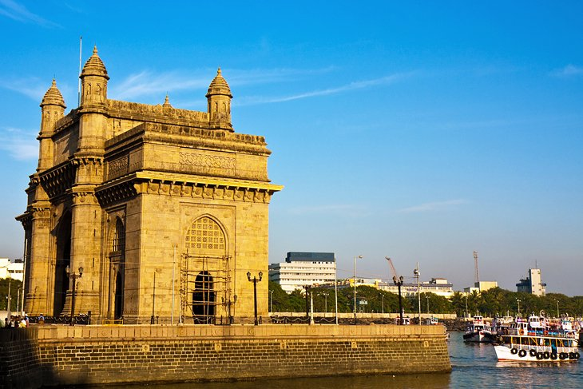

The Gateway of India
Nowadays, the Gateway of India is one of the most popular gathering spots in Mumbai for tourists and locals alike. Watch the yachts and ferries take off to sea from the five jetties that flank the arch. Enjoy some of the famous bhelpuri (a crunchy, savory snack made of puffed rice and doused in tamarind sauce) from the street food vendors. Or just spend an hour or two people watching at this lively attraction.